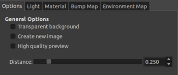
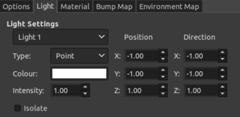
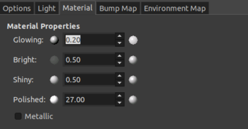

    <div class="container content">
      {% assign prev_page = "Key Sequences" %}
      {% assign prev_href = "keyseq.html" %}
      {% assign next_page = null %}
      {% assign next_href = null %}
      {% include usergnav.html %}
  
      <div class="row">
        <div class="col-lg-7">
          <h2 class="page-title">Creating Key Icons</h2>
          <p>If you wish to create your own Key icons in the same style as those included with AndyMOTE then here's how to do it using <a href="https://www.gimp.org/">Gimp</a>.<p>
          <ul id="bullets">
            <li>First download the <a href="assets/images/BLANK_KEY.xcf" download>Blank Key Template</a>.</li>
            <li>Then, open the file in Gimp.</li>
            <li>Edit as required.</li>
            <li>Select <b>Filters > Light and Shadow > Lighting Effects</b>.</li>
            <li>Adjust Settings as shown in the figures.</li>
            <li>Click OK.</li>
            <li>Save as PNG file.</li>
          </ul>
          <p><b>Note:</b> Font used: <i>FreeSans</i>; <i>Bump Map</i> and <i>Environment Map</i> are disabled.</p>
          <p>You can, of course, apply the above filter to any icon image to obtain similar style, or simply use any image.</p>
          <p>It is recommended that Key icons are 512x512px in size.</p>
        </div>
        <div class="col-lg-5">
          <div class="row spacer6 d-none d-lg-block"></div>
          <p class="aligncenter"></p>
          <p class="aligncenter"></p>
          <p class="aligncenter"></p>
        </div>
      </div>
      {% include usergnav.html %}
    </div>

